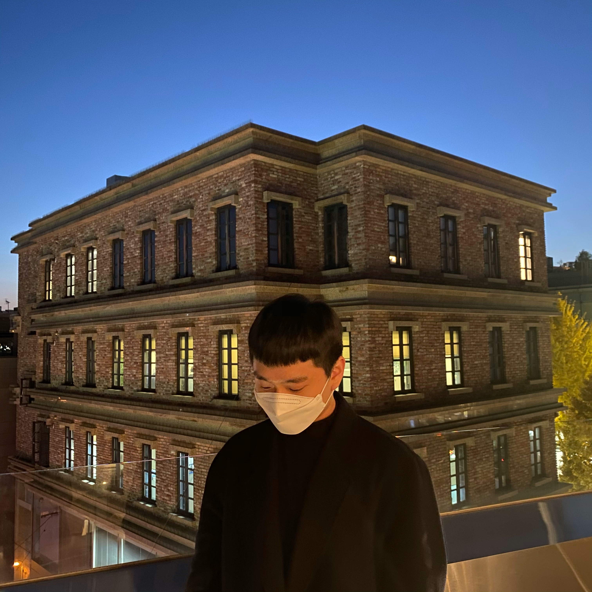

YoonCoding
Main
About
Contact
Project

@Yoon__min_(Yoon Sung Min)
Hello! Welcome to my Project Website!
to look at the problem from a different perspective
1 Day 1 commit
Post technology blog
About
Project
Skill
YOUTUBE Web Page
My First Project!Upload self-made video, YOUTUBE WEB page
To Do List Web Page
Upload your to do list!
Paintbrush Web Page
Draw what you want to draw